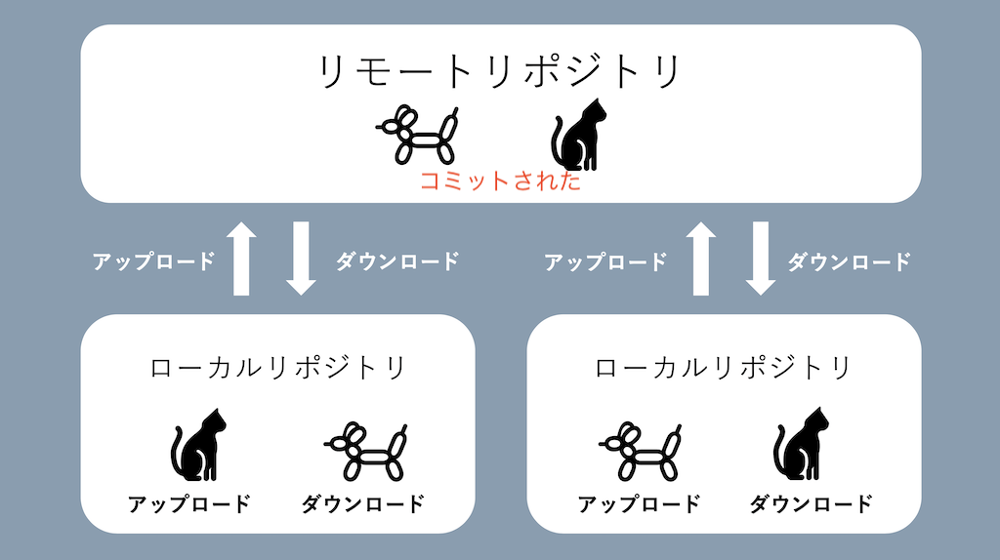
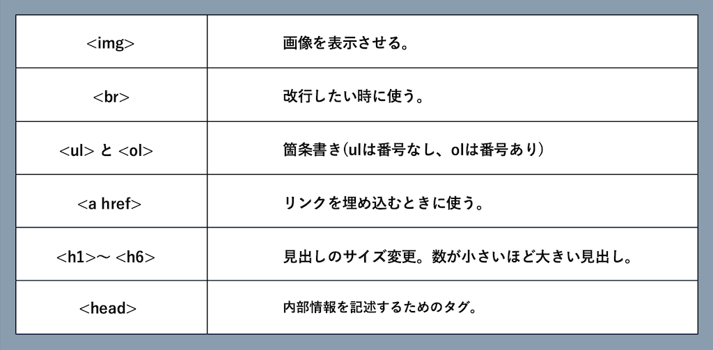

Gitとは
「分散型バージョン管理システム」簡単にいうと「ファイルのバージョン管理が簡単にできるシステム」
メリット
- 古いバージョン・新しいバージョンどちらも管理できる
- 簡単に古いバージョンに戻せる
- ファイルや変更履歴をスムーズに共有できる
- 豊富な機能で開発の効率化
デメリット
- 運用ルールを決めておかないと混乱する
- Gitについて学習する必要がある
基本用語
- リポジトリ - ファイルや変更履歴を保存しておくデータベース
- コミット - ファイルや変更をリポジトリに登録すること

html(Hyper Text Markup Language)とは
ウェブページの土台を作るための言語
よく使うhtmlタグ

参考資料
カゴヤのサーバー研究所
サルカワWebデザイン入門
ZeroPlus Media